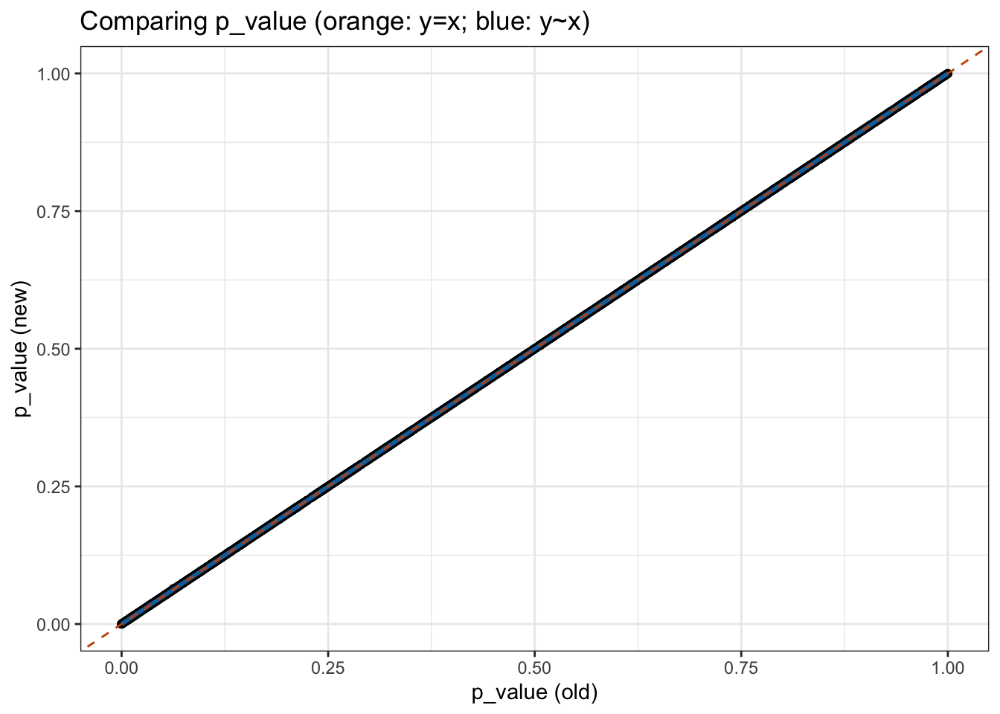
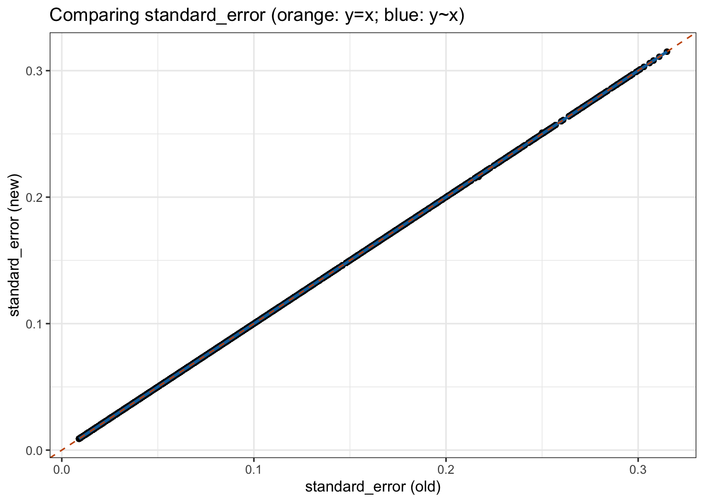
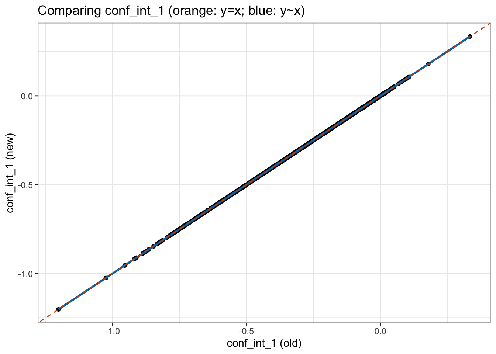
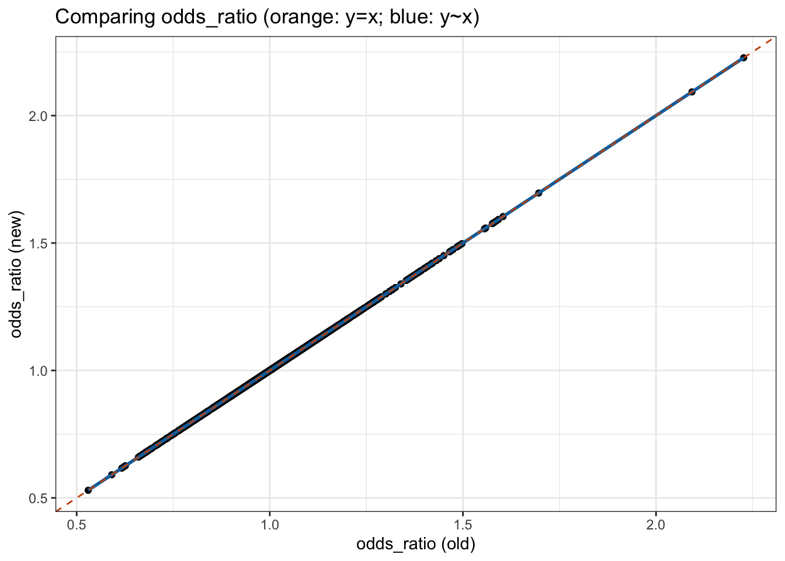
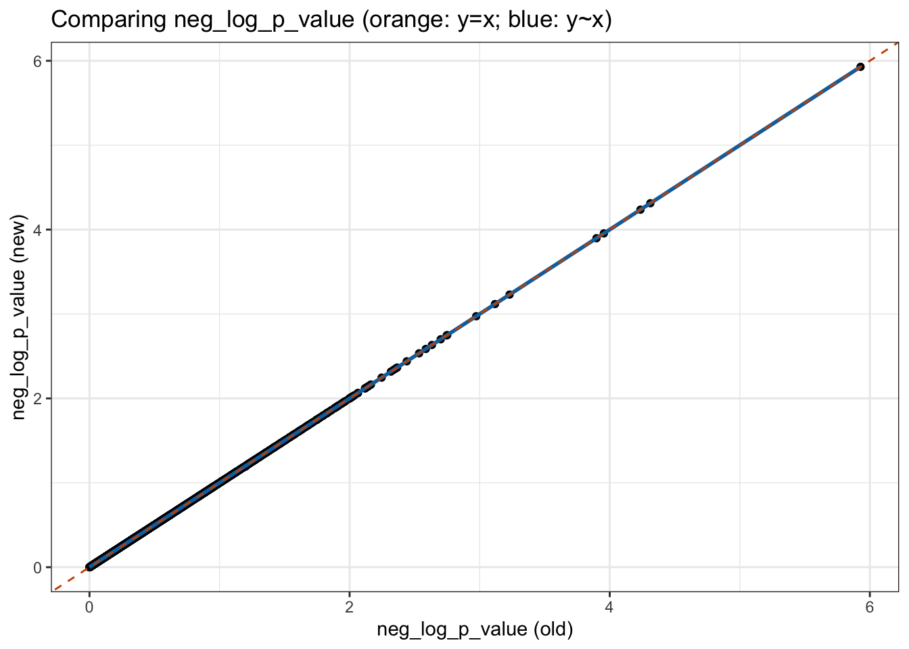
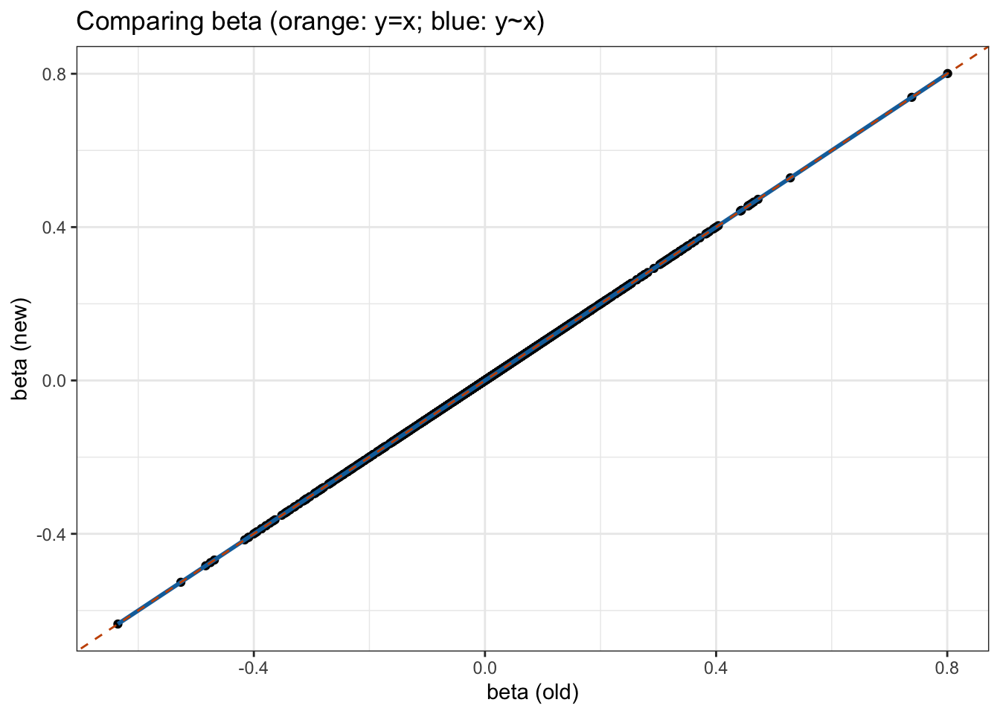
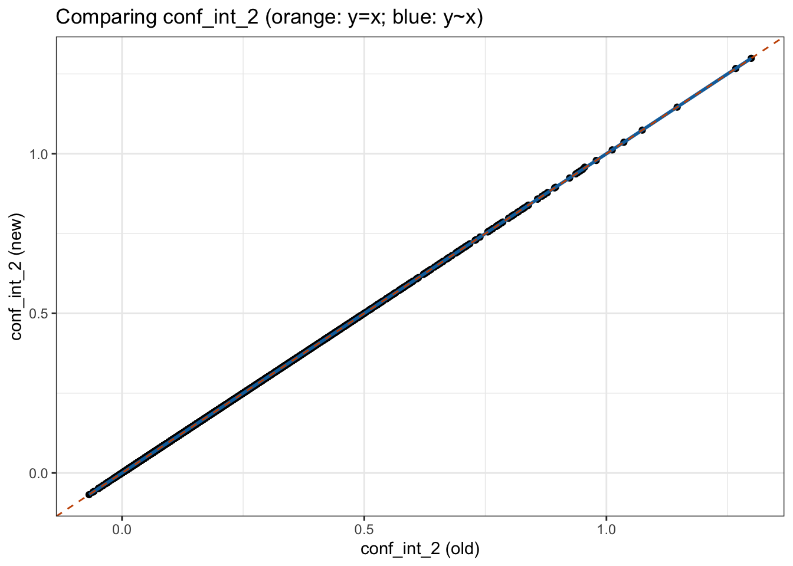
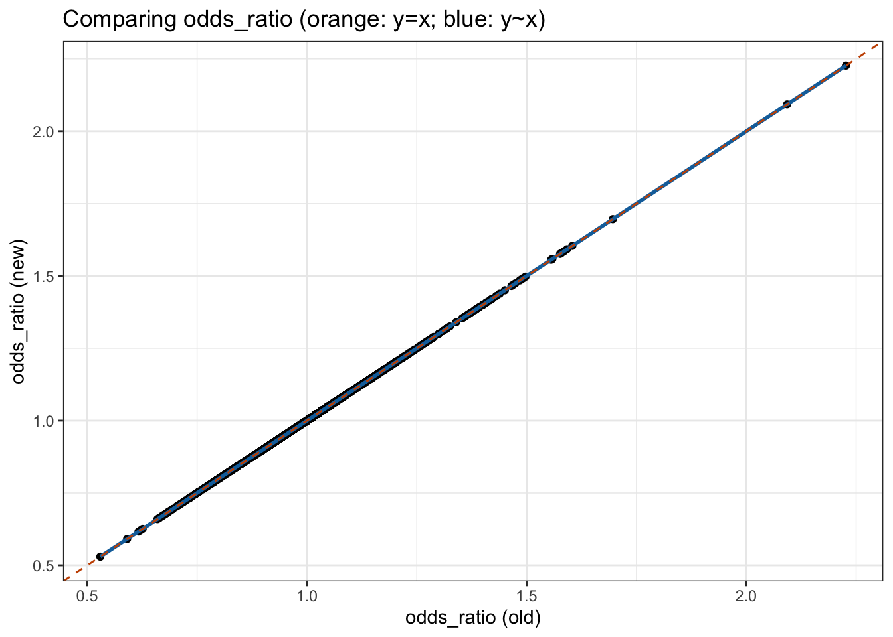
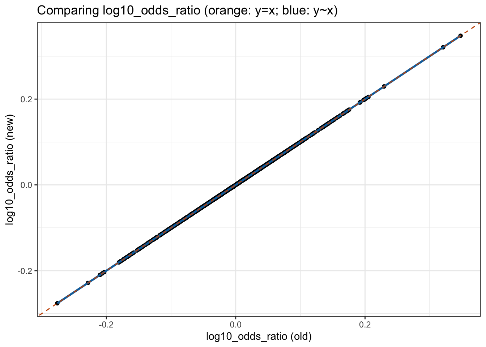

Compare two runs of pheTK on the same input data
Xiang Zhu, Ph.D.
First created on 2025-04-04; Last modified on 2026-03-27
Last updated: 2026-03-27
Checks: 7 0
Knit directory: scratch/
This reproducible R Markdown analysis was created with workflowr (version 1.7.2). The Checks tab describes the reproducibility checks that were applied when the results were created. The Past versions tab lists the development history.
Great! Since the R Markdown file has been committed to the Git repository, you know the exact version of the code that produced these results.
Great job! The global environment was empty. Objects defined in the global environment can affect the analysis in your R Markdown file in unknown ways. For reproduciblity it’s best to always run the code in an empty environment.
The command set.seed(20250402) was run prior to running
the code in the R Markdown file. Setting a seed ensures that any results
that rely on randomness, e.g. subsampling or permutations, are
reproducible.
Great job! Recording the operating system, R version, and package versions is critical for reproducibility.
Nice! There were no cached chunks for this analysis, so you can be confident that you successfully produced the results during this run.
Great job! Using relative paths to the files within your workflowr project makes it easier to run your code on other machines.
Great! You are using Git for version control. Tracking code development and connecting the code version to the results is critical for reproducibility.
The results in this page were generated with repository version 2718acf. See the Past versions tab to see a history of the changes made to the R Markdown and HTML files.
Note that you need to be careful to ensure that all relevant files for
the analysis have been committed to Git prior to generating the results
(you can use wflow_publish or
wflow_git_commit). workflowr only checks the R Markdown
file, but you know if there are other scripts or data files that it
depends on. Below is the status of the Git repository when the results
were generated:
Ignored files:
Ignored: .DS_Store
Ignored: .Rhistory
Ignored: .Rproj.user/
Note that any generated files, e.g. HTML, png, CSS, etc., are not included in this status report because it is ok for generated content to have uncommitted changes.
These are the previous versions of the repository in which changes were
made to the R Markdown
(analysis/compare_phetk_logistic.Rmd) and HTML
(docs/compare_phetk_logistic.html) files. If you’ve
configured a remote Git repository (see ?wflow_git_remote),
click on the hyperlinks in the table below to view the files as they
were in that past version.
| File | Version | Author | Date | Message |
|---|---|---|---|---|
| Rmd | 2718acf | Xiang Zhu | 2026-03-27 | wflow_publish("analysis/compare_phetk_logistic.Rmd") |
Direct vs Script
old_dt <- data.table::fread("/Users/xiangzhu/Downloads/phetk_aou_20260326/direct_chr18_53346253_T_C_phewas_results.tsv")
new_dt <- data.table::fread("/Users/xiangzhu/Downloads/phetk_aou_20260326/chr18_53346253_T_C_phewas_results.tsv")
data.table::setorder(old_dt, phecode)
data.table::setorder(new_dt, phecode)
xzTools::compare_2dts(
new_dt = new_dt,
old_dt = old_dt,
cols_to_compare = names(old_dt),
cols_to_match = NULL,
get_exact_match = TRUE,
get_correlation = FALSE,
get_regression = FALSE,
get_scatterplot = FALSE
) new_col old_col nrow_total nrow_same
<char> <char> <int> <int>
1: phecode phecode 2190 2190
2: cases cases 2190 2190
3: controls controls 2190 2190
4: p_value p_value 2190 11
5: neg_log_p_value neg_log_p_value 2190 11
6: standard_error standard_error 2190 2188
7: beta beta 2190 4
8: conf_int_1 conf_int_1 2190 2188
9: conf_int_2 conf_int_2 2190 2188
10: odds_ratio odds_ratio 2190 113
11: log10_odds_ratio log10_odds_ratio 2190 74
12: converged converged 2190 2078
13: phecode_sex_restriction phecode_sex_restriction 2190 2190
14: phecode_string phecode_string 2190 2190
15: phecode_category phecode_category 2190 2190
nrow_both_nonna same_both_nonna
<int> <lgcl>
1: 2190 TRUE
2: 2190 TRUE
3: 2190 TRUE
4: 2190 FALSE
5: 2190 FALSE
6: 2190 FALSE
7: 2190 FALSE
8: 2190 FALSE
9: 2190 FALSE
10: 2190 FALSE
11: 2190 FALSE
12: 2190 FALSE
13: 2190 TRUE
14: 2190 TRUE
15: 2190 TRUEscat<-xzTools::compare_2dts(
new_dt = new_dt,
old_dt = old_dt,
cols_to_compare = names(old_dt)[4:11],
cols_to_match = NULL,
get_exact_match = FALSE,
get_correlation = TRUE,
get_regression = TRUE,
get_scatterplot = TRUE
)Pearson correlation between p_value in new and p_value in old:
Estimate = 0.99999999, 95% CI = [0.99999999, 0.99999999]
Regression coefficients for p_value (new ~ old):
Estimate Std. Error t value Pr(>|t|)
(Intercept) 2.558754e-06 1.486420e-06 1.72142 0.08531597
x 9.999962e-01 2.717175e-06 368027.91014 0.00000000
Pearson correlation between neg_log_p_value in new and neg_log_p_value in old:
Estimate = 0.99999988, 95% CI = [0.99999987, 0.99999989]
Regression coefficients for neg_log_p_value (new ~ old):
Estimate Std. Error t value Pr(>|t|)
(Intercept) 1.783589e-06 7.577349e-06 2.353843e-01 0.8139325
x 9.999856e-01 1.054360e-05 9.484294e+04 0.0000000
Pearson correlation between standard_error in new and standard_error in old:
Estimate = 0.99999992, 95% CI = [0.99999991, 0.99999993]
Regression coefficients for standard_error (new ~ old):
Estimate Std. Error t value Pr(>|t|)
(Intercept) -2.414103e-07 1.009855e-06 -2.390545e-01 0.8110857
x 1.000003e+00 8.614878e-06 1.160786e+05 0.0000000
Pearson correlation between beta in new and beta in old:
Estimate = 1.00000000, 95% CI = [1.00000000, 1.00000000]
Regression coefficients for beta (new ~ old):
Estimate Std. Error t value Pr(>|t|)
(Intercept) 1.201217e-07 1.735821e-07 6.920169e-01 0.4890002
x 1.000006e+00 1.512624e-06 6.611068e+05 0.0000000
Pearson correlation between conf_int_1 in new and conf_int_1 in old:
Estimate = 0.99999993, 95% CI = [0.99999993, 0.99999994]
Regression coefficients for conf_int_1 (new ~ old):
Estimate Std. Error t value Pr(>|t|)
(Intercept) -2.437953e-06 1.944444e-06 -1.253805 0.2100469
x 9.999909e-01 7.748208e-06 129060.924548 0.0000000
Pearson correlation between conf_int_2 in new and conf_int_2 in old:
Estimate = 0.99999989, 95% CI = [0.99999988, 0.99999990]
Regression coefficients for conf_int_2 (new ~ old):
Estimate Std. Error t value Pr(>|t|)
(Intercept) -5.546387e-06 2.647272e-06 -2.095133 0.03627389
x 1.000037e+00 1.008405e-05 99170.228570 0.00000000
Pearson correlation between odds_ratio in new and odds_ratio in old:
Estimate = 0.99999999, 95% CI = [0.99999999, 0.99999999]
Regression coefficients for odds_ratio (new ~ old):
Estimate Std. Error t value Pr(>|t|)
(Intercept) -1.098758e-05 2.349514e-06 -4.676536 3.095491e-06
x 1.000011e+00 2.298330e-06 435103.292830 0.000000e+00
Pearson correlation between log10_odds_ratio in new and log10_odds_ratio in old:
Estimate = 1.00000000, 95% CI = [1.00000000, 1.00000000]
Regression coefficients for log10_odds_ratio (new ~ old):
Estimate Std. Error t value Pr(>|t|)
(Intercept) 5.216820e-08 7.538574e-08 6.920169e-01 0.4890002
x 1.000006e+00 1.512624e-06 6.611068e+05 0.0000000$p_value_vs_p_value
$neg_log_p_value_vs_neg_log_p_value
$standard_error_vs_standard_error
$beta_vs_beta
$conf_int_1_vs_conf_int_1
$conf_int_2_vs_conf_int_2
$odds_ratio_vs_odds_ratio
$log10_odds_ratio_vs_log10_odds_ratio20260318 vs 20260326
old_dt <- data.table::fread("/Users/xiangzhu/Downloads/phetk_aou_20260318/chr18_53346253_T_C_phewas_results.tsv")
new_dt <- data.table::fread("/Users/xiangzhu/Downloads/phetk_aou_20260326/chr18_53346253_T_C_phewas_results.tsv")
data.table::setorder(old_dt, phecode)
data.table::setorder(new_dt, phecode)
xzTools::compare_2dts(
new_dt = new_dt,
old_dt = old_dt,
cols_to_compare = names(old_dt),
cols_to_match = NULL,
get_exact_match = TRUE,
get_correlation = FALSE,
get_regression = FALSE,
get_scatterplot = FALSE
) new_col old_col nrow_total nrow_same
<char> <char> <int> <int>
1: phecode phecode 2190 2190
2: cases cases 2190 2190
3: controls controls 2190 2190
4: p_value p_value 2190 8
5: neg_log_p_value neg_log_p_value 2190 8
6: standard_error standard_error 2190 2188
7: beta beta 2190 6
8: conf_int_1 conf_int_1 2190 2188
9: conf_int_2 conf_int_2 2190 2188
10: odds_ratio odds_ratio 2190 126
11: log10_odds_ratio log10_odds_ratio 2190 88
12: converged converged 2190 2079
13: phecode_sex_restriction phecode_sex_restriction 2190 2190
14: phecode_string phecode_string 2190 2190
15: phecode_category phecode_category 2190 2190
nrow_both_nonna same_both_nonna
<int> <lgcl>
1: 2190 TRUE
2: 2190 TRUE
3: 2190 TRUE
4: 2190 FALSE
5: 2190 FALSE
6: 2190 FALSE
7: 2190 FALSE
8: 2190 FALSE
9: 2190 FALSE
10: 2190 FALSE
11: 2190 FALSE
12: 2190 FALSE
13: 2190 TRUE
14: 2190 TRUE
15: 2190 TRUEscat<-xzTools::compare_2dts(
new_dt = new_dt,
old_dt = old_dt,
cols_to_compare = names(old_dt)[4:11],
cols_to_match = NULL,
get_exact_match = FALSE,
get_correlation = TRUE,
get_regression = TRUE,
get_scatterplot = TRUE
)Pearson correlation between p_value in new and p_value in old:
Estimate = 1.00000000, 95% CI = [1.00000000, 1.00000000]
Regression coefficients for p_value (new ~ old):
Estimate Std. Error t value Pr(>|t|)
(Intercept) 1.819469e-06 1.067135e-06 1.705004e+00 0.0883357
x 9.999973e-01 1.950722e-06 5.126293e+05 0.0000000
Pearson correlation between neg_log_p_value in new and neg_log_p_value in old:
Estimate = 0.99999994, 95% CI = [0.99999993, 0.99999994]
Regression coefficients for neg_log_p_value (new ~ old):
Estimate Std. Error t value Pr(>|t|)
(Intercept) 1.278383e-06 5.420348e-06 2.358488e-01 0.8135721
x 9.999897e-01 7.542238e-06 1.325853e+05 0.0000000
Pearson correlation between standard_error in new and standard_error in old:
Estimate = 0.99999992, 95% CI = [0.99999991, 0.99999993]
Regression coefficients for standard_error (new ~ old):
Estimate Std. Error t value Pr(>|t|)
(Intercept) -2.414103e-07 1.009855e-06 -2.390545e-01 0.8110857
x 1.000003e+00 8.614878e-06 1.160786e+05 0.0000000
Pearson correlation between beta in new and beta in old:
Estimate = 1.00000000, 95% CI = [1.00000000, 1.00000000]
Regression coefficients for beta (new ~ old):
Estimate Std. Error t value Pr(>|t|)
(Intercept) 8.551830e-08 1.227163e-07 6.968779e-01 0.4859533
x 1.000004e+00 1.069369e-06 9.351347e+05 0.0000000
Pearson correlation between conf_int_1 in new and conf_int_1 in old:
Estimate = 0.99999997, 95% CI = [0.99999996, 0.99999997]
Regression coefficients for conf_int_1 (new ~ old):
Estimate Std. Error t value Pr(>|t|)
(Intercept) -1.658646e-06 1.374891e-06 -1.206384 0.2278
x 9.999928e-01 5.478654e-06 182525.272041 0.0000
Pearson correlation between conf_int_2 in new and conf_int_2 in old:
Estimate = 0.99999993, 95% CI = [0.99999993, 0.99999994]
Regression coefficients for conf_int_2 (new ~ old):
Estimate Std. Error t value Pr(>|t|)
(Intercept) -4.135541e-06 2.031017e-06 -2.036192 0.04185131
x 1.000027e+00 7.736547e-06 129260.162342 0.00000000
Pearson correlation between odds_ratio in new and odds_ratio in old:
Estimate = 1.00000000, 95% CI = [1.00000000, 1.00000000]
Regression coefficients for odds_ratio (new ~ old):
Estimate Std. Error t value Pr(>|t|)
(Intercept) -7.778820e-06 1.661074e-06 -4.683007 3.000248e-06
x 1.000008e+00 1.624887e-06 615432.064824 0.000000e+00
Pearson correlation between log10_odds_ratio in new and log10_odds_ratio in old:
Estimate = 1.00000000, 95% CI = [1.00000000, 1.00000000]
Regression coefficients for log10_odds_ratio (new ~ old):
Estimate Std. Error t value Pr(>|t|)
(Intercept) 3.714013e-08 5.329503e-08 6.968779e-01 0.4859533
x 1.000004e+00 1.069369e-06 9.351347e+05 0.0000000$p_value_vs_p_value
$neg_log_p_value_vs_neg_log_p_value
$standard_error_vs_standard_error
$beta_vs_beta
$conf_int_1_vs_conf_int_1
$conf_int_2_vs_conf_int_2
$odds_ratio_vs_odds_ratio
$log10_odds_ratio_vs_log10_odds_ratio
R version 4.5.2 (2025-10-31)
Platform: aarch64-apple-darwin20
Running under: macOS Tahoe 26.3.1
Matrix products: default
BLAS: /System/Library/Frameworks/Accelerate.framework/Versions/A/Frameworks/vecLib.framework/Versions/A/libBLAS.dylib
LAPACK: /Library/Frameworks/R.framework/Versions/4.5-arm64/Resources/lib/libRlapack.dylib; LAPACK version 3.12.1
locale:
[1] en_US.UTF-8/en_US.UTF-8/en_US.UTF-8/C/en_US.UTF-8/en_US.UTF-8
time zone: America/Los_Angeles
tzcode source: internal
attached base packages:
[1] stats graphics grDevices utils datasets methods base
other attached packages:
[1] xzTools_0.0.0.9000 data.table_1.18.2.1 workflowr_1.7.2
loaded via a namespace (and not attached):
[1] sass_0.4.10 generics_0.1.4 lattice_0.22-9 stringi_1.8.7
[5] digest_0.6.39 magrittr_2.0.4 evaluate_1.0.5 grid_4.5.2
[9] RColorBrewer_1.1-3 fastmap_1.2.0 Matrix_1.7-4 rprojroot_2.1.1
[13] jsonlite_2.0.0 processx_3.8.6 whisker_0.4.1 ps_1.9.1
[17] promises_1.5.0 httr_1.4.8 mgcv_1.9-4 scales_1.4.0
[21] jquerylib_0.1.4 cli_3.6.5 rlang_1.1.7 splines_4.5.2
[25] withr_3.0.2 cachem_1.1.0 yaml_2.3.12 otel_0.2.0
[29] tools_4.5.2 dplyr_1.2.0 ggplot2_4.0.2 httpuv_1.6.16
[33] vctrs_0.7.2 R6_2.6.1 lifecycle_1.0.5 git2r_0.36.2
[37] stringr_1.6.0 fs_1.6.6 pkgconfig_2.0.3 callr_3.7.6
[41] pillar_1.11.1 bslib_0.10.0 later_1.4.7 gtable_0.3.6
[45] glue_1.8.0 Rcpp_1.1.1 xfun_0.56 tibble_3.3.1
[49] tidyselect_1.2.1 rstudioapi_0.18.0 knitr_1.51 farver_2.1.2
[53] nlme_3.1-168 htmltools_0.5.9 labeling_0.4.3 rmarkdown_2.30
[57] compiler_4.5.2 getPass_0.2-4 S7_0.2.1